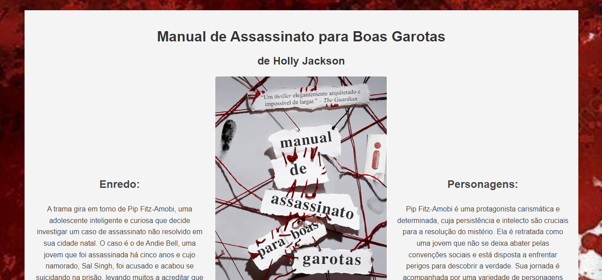
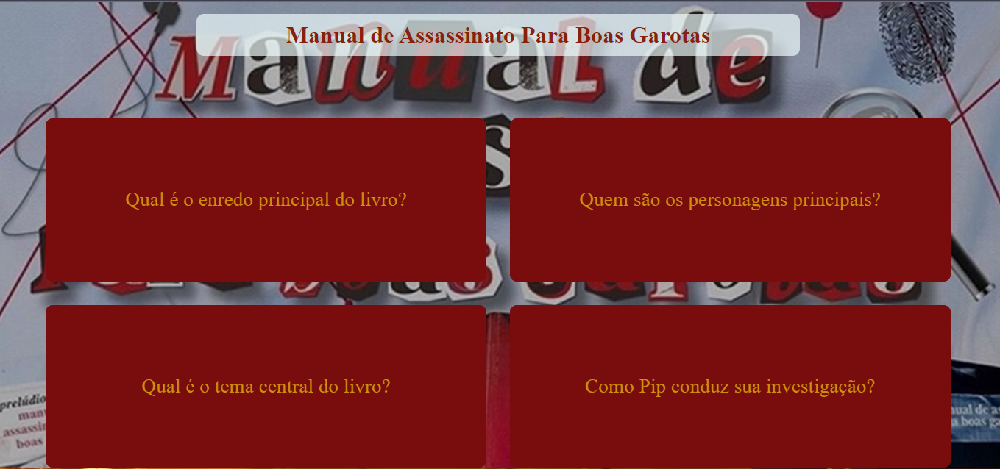

Meus Projetos

Blog: Manual de Assassinatos para Boas Garotas
Este projeto é uma página web que apresenta uma sinopse da minha série favorita, incluído informações sobre os personagens, o enredo e fotos ilustrativas. A página é estilizada com CSS para uma visualização agradável.

Bem-vindo ao Jogo de Ping Pong Online
Este projeto é um jogo interativo de ping-pong, permitindo ao usuário desafiar a "máquina" em uma disputa por pontuação

Flashcards: Manual de Assassinato Para Boas Garotas
Este projeto cria uma experiência interativa sobre a série "Manual de Assassinato Para Boas Garotas" , permitindo aos usuários explorar informações sobre o enredo e personagens da série, através de flashcards.